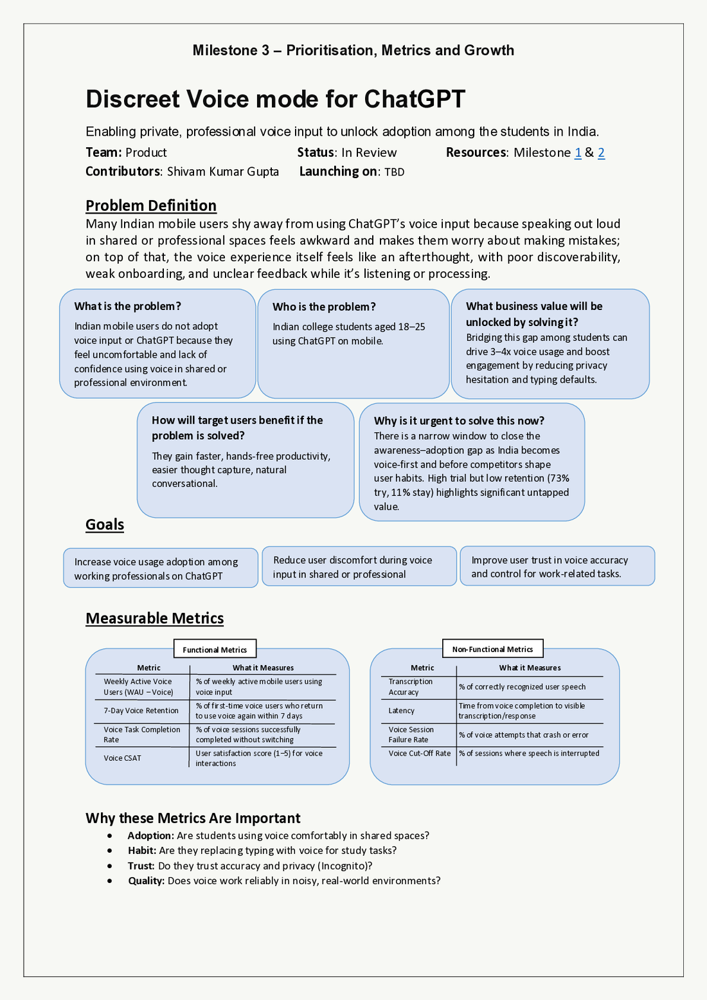
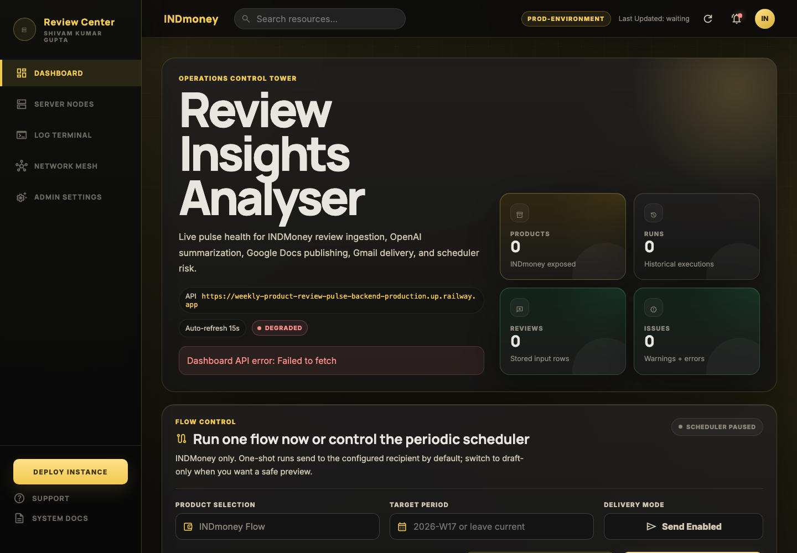
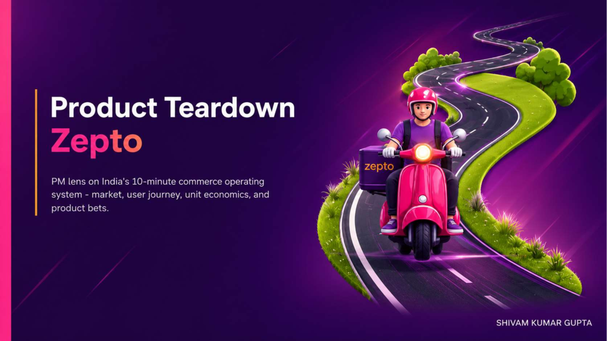
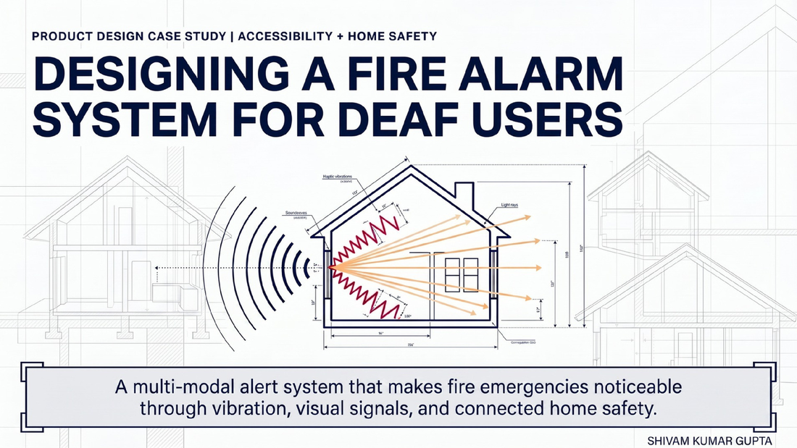
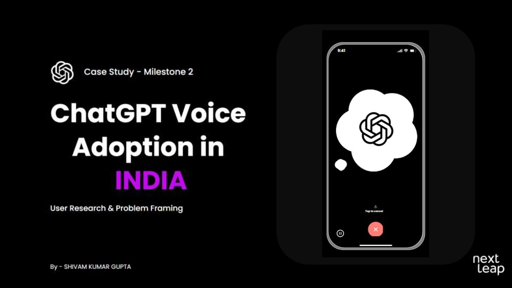

Case file
He can translate ambiguity into product artifacts and working systems.
Shivam combines NextLeap PM training, BIT Mesra engineering depth, published research discipline, and hands-on AI prototyping into one operating loop.
BIT Mesra undergrad and NextLeap Top PM Fellow turning AI, research, and backend depth into product decisions.


Case file
Shivam combines NextLeap PM training, BIT Mesra engineering depth, published research discipline, and hands-on AI prototyping into one operating loop.
Evidence
His voice adoption work starts from real context: shared spaces, privacy hesitation, trust, and habit formation.
Forensics
From acoustic reconstruction pipelines to Spring Boot APIs, the technical layer is visible and verifiable.
Case studies, prototypes, technical projects, and published research, arranged for a reviewer who wants proof quickly.
RAG / Fintech / Trust
Built a high-trust, low-risk fintech assistant that answers only factual mutual fund questions using official source discipline.
Agentic AI / MCP
Designed an AI workflow that ingests app reviews, clusters user pain points, summarizes themes, and prepares stakeholder-ready insight delivery.

Quick commerce / Strategy
Analyzed Zepto through a PM lens: market opportunity, user behavior, unit economics, product gaps, and strategic bets for sustainable growth.

Accessibility / Product design
Reframed fire safety around guaranteed attention using wearable vibration alerts, visual room modules, app setup, backup power, and privacy-first reliability.
Research notes, PRDs, product design decks, live apps, and code are attached so the work stays inspectable.
Problem definition, success metrics, target segment, solution rationale, user flow, and launch readiness.
Open LinkedIn post ResearchSurvey insights, personas, context barriers, feature discoverability, and the true barrier behind low usage.
Open LinkedIn post TeardownQuick-commerce teardown covering market opportunity, user behavior, unit economics, product gaps, and PM recommendations.
Open LinkedIn post AccessibilityInclusive safety system for deaf and hard-of-hearing users with reliable multi-modal alerting.
Open LinkedIn post BackendJWT auth, RBAC, validation, normalized MySQL schema, clean API layers, and 15+ endpoints.
Open LinkedIn evidence AI prototypeTask automation, structured outputs, prompt design, human-in-the-loop refinement, and evaluation thinking.
Open LinkedIn evidence PublicationPublished acoustic imaging work connecting signal processing, quantitative evaluation, and clearer reconstruction.
Open ResearchGateMouse-wheel through the proof stack: research, PRD, AI build, and inclusive product design.
Voice research for Indian students surfaced the real issue: shared spaces, social discomfort, trust, and habit formation.

Discreet Voice Mode connects target users, MVP scope, user flow, success metrics, and release readiness.
The review pulse agent turns public app reviews into clustered themes, summaries, and stakeholder-ready product signals.
The fire alarm redesign reframes safety around guaranteed attention using wearable vibration, visual alerts, and reliable local fallback.
The Zepto teardown connects quick-commerce behavior, unit economics, gaps, loyalty, and dark-store infrastructure bets.
Readable source artifacts: the resume, case study, and product teardown PDFs are stored locally in this repo.
Publication proof
At UiT The Arctic University of Norway, Shivam worked on computational acoustic imaging. His published paper explores automated focusing with AutoSAFT and block-matching 4D filtering for clearer scanning acoustic microscopy reconstruction.
Read on ResearchGateA signal-processing research project using automated Synthetic Aperture Focusing Technique and BM4D filtering to improve structural clarity in scanning acoustic microscopy.
A broader trail shows API building, frontend practice, Python utilities, product prototypes, and published research.
His path runs through BIT Mesra, UiT research, a published acoustic imaging paper, backend projects, and NextLeap PM training. That mix is useful for AI products that need both user empathy and systems judgment.
Built PM artifacts across user research, problem framing, metrics, prioritization, product design, product teardowns, and AI prototyping.
Co-authored research on extended depth acoustic imaging with AutoSAFT and BM4D filtering, linking algorithms, evaluation metrics, and scientific communication.
Engineering foundation with self-study in data structures, Java, DBMS, operating systems, and computer networks.
Developed acoustic image processing pipelines, handled large datasets, and collaborated with an international research team.
Structured for AI Product Manager screens, technical screens, and ATS parsing without making the page feel like a keyword dump.
User research, problem framing, PRDs, product strategy, roadmapping, prioritization, user stories, wireframing, MVP definition, Agile and Scrum.
AI use case discovery, prompt engineering, Claude API integration, AI workflow design, human-in-the-loop thinking, evaluation metrics.
Funnel thinking, activation, retention, engagement metrics, success metrics, experimentation, and data-backed decision making.
C++, Python, SQL, Spring Boot, REST APIs, microservices, ReactJS, Node.js, MySQL, Git, and GitHub.
Best fit: AI product teams that value user research, technical fluency, prototyping, and clear product documentation.